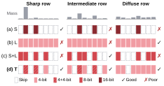
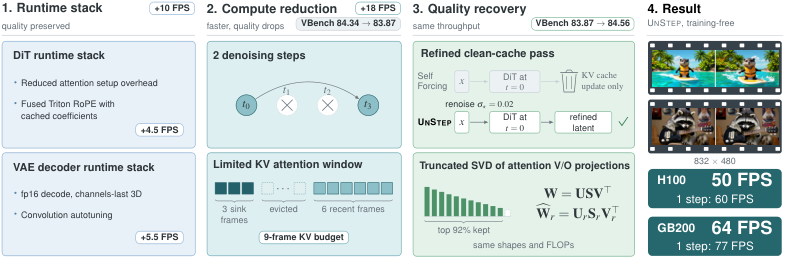

目录
0. 太长不看（TL;DR）
近期进展
1. 预备知识：把图变成序列
2. 概念地图：稀疏化的三大技术族
3. 发展历程时间线
4. VLM 中的应用（含代码解析）
5. DiT / 视频生成中的应用（含代码解析）
更新附录（展开选读）
7. 未来发展方向
8. 参考文献
来源与代码示例 性能数字来自所引论文或官方报告，实验条件随引用标注；源码分析与独立性能复现分别说明。更新记录保留原快照日期。
代码示例 未标注提交版本的源码节选用于解释机制，省略项需结合原仓库补全。配套 标准库数值示例 可用 Python 独立运行，覆盖核化注意力递推、Gated DeltaNet、AWQ、量化编码与单位置拒绝采样；它不验证论文训练结果或 GPU 性能。
从这里读起 · 先拆总成本，再决定删 token、删连接还是复用计算 图像 token 与注意力 → 三种优化对象 → VLM 任务依赖 → DiT / 缓存 → 研究问题 。相关发布记录见“近期进展”。
总成本含随 N 线性增长的投影/FFN、随 N² 增长的注意力交互，以及去噪步数 T。剪 token、稀疏连接、跨步残差复用改变不同对象，误差会耦合。低注意力是经验信号，不是 token 无因果作用的保证。
一个可算的例子： 原模型若注意力占 40%、其余占 60%，只把注意力计算减到 1/4，理想总耗时仍为 0.6+0.4/4=0.7，加速上界约 1.43×，尚未计排序/合并开销。FLOPs、kernel 和端到端倍数不能互换。
用同一组问题比较路线
路线对照 · 窄屏可横向滑动 路线 它改变什么 何时要重新判断 局部连接 Sliding Tile Attention 用硬件友好时空窗口 窗口形状与布局共同决定墙钟收益 轨迹复用 TaylorSeer 从直接缓存扩展到轨迹预测 多步误差累积与步数削减须联合校准 选择依据 DART 从去重/多样性挑战重要性剪枝 文字、小目标与 grounding 可能被平均指标掩盖
值得做的研究： 固定模型、分辨率、帧数、采样步、卡数和质量预算，加入强稠密基线与随机选择基线，报告最坏失败类型；同卡数消融才能分清 TeaCache 与多卡并行的贡献。
谱系与原始资料（机制转述，非原文直引） Peiyuan Zhang et al. Fast Video Generation with Sliding Tile Attention （Sliding Tile Attention）；arXiv:2502.04507，v1 2025-02-06。原始论文与版本记录 Jiacheng Liu et al. From Reusing to Forecasting: Accelerating Diffusion Models with TaylorSeers （TaylorSeer）；arXiv:2503.06923，v1 2025-03-10。原始论文与版本记录 Zichen Wen et al. Stop Looking for Important Tokens in Multimodal Language Models: Duplication Matters More （DART）；arXiv:2502.11494，v1 2025-02-17。原始论文与版本记录 以上条目已于 2026-11-01 对照 arXiv 题名、作者与首发日期；比较设计选择，不作跨论文性能排名。
0 太长不看（TL;DR）
定义： ViT 稀疏化 = 在 Vision Transformer（及以其为骨架的视觉语言模型 VLM、扩散 Transformer DiT）中，只计算"重要的"部分，跳过"冗余的"部分 ，从而降低计算量与显存占用。它有三个互补的技术族：
稀疏 Attention 改连接结构（哪些 token 看哪些 token）；
Token 剪枝 / 合并 减序列长度（哪些 token 留下来）；
缓存复用 砍时间维度（哪些步/哪些 KV 可以不重算）。
历史主线 ：2019–2020 年 NLP 的 Sparse Transformer / Longformer 提出结构化稀疏注意力 → 2020 年 ViT 把图像变成 token 序列 → 2021 年 Swin（窗口注意力）与 DynamicViT（可学习 token 剪枝）分出两条路 → 2022 年 ToMe 证明"免训练合并 token"可行 → 2023 年起 LLaVA 等 VLM 的"视觉 token 爆炸"让 FastV、VisionZip 等推理期剪枝爆发；同期 DiT 统治视频生成，T-GATE / PAB / TeaCache 利用步间冗余 缓存、Sparse VideoGen（SVG）利用3D 注意力稀疏模式 加速。两大架构的痛点不同 ：VLM 是自回归解码，视觉 token 既拖慢 prefill 又膨胀 KV Cache，主流做法是在 LLM 内部按注意力分数剪/并视觉 token （FastV 只需几十行补丁）；DiT 是迭代去噪，序列长（720p 5 秒视频 ≈ 3 万+ token），主流做法是按注意力头分类做稀疏 attention + 跨时间步缓存 。2025–2026 前沿 ：从"免训练启发式"走向原生可训练稀疏 （Sparse Forcing、Veda）；从"平均精度"走向角色感知 / 后果感知 的 token 管理；从"算法单点"走向算法-硬件协同 （SPADE 稀疏引擎、FVAttn 负载均衡、块稀疏 kernel）；自回归视频扩散的 KV Cache 压缩 成为新战场（VideoMLA、Forcing-KV、FadeMem）。
近期进展（展开）
近期进展 2026 年 10 月下旬 · 本方向近期论文与项目更新（详见文末「最新进展」）
Triage：注意力 tile 三档分诊 10-26 · 首尔大学
视频 DiT 的 tile 分 skip / skim（NVFP4）/ refine 三档，端到端最高 2.32×，相对其他近似注意力基线，接近稠密参考输出的 PSNR 高 0.3–3.0dB；非优于稠密模型。
→ 跳到详情 LearnPrunerV2 学习式剪枝 10-27 · 理想汽车 · ACM MM 2026
剪 77.8% 视觉 token 保留 99.8%；TFLOPs 9.7×、prefill 6.2×、KV Cache 8.7×。
→ 跳到详情 LOWN：扩散 VLM 按需看图 10-27 · KAIST
去掉图像只改 22.8% 步的决策：0.353× 解码 FLOPs 保留 99.6%，叠 Fast-dLLM 达 5.6–7.0×。
→ 跳到详情 Rescuing Your Pruning 10-24 · 东方理工+上交等
压缩感知后训练把 grounding retention 4.0→64.8，说明"在哪剪"比"剪多少"更重要。
→ 跳到详情 1 预备知识：图像是如何变成"一串词"的要看懂 ViT 稀疏化，只需先弄清四件事：ViT 怎么处理图像、Self-Attention 为什么是 O(N²)、自回归模型的 KV Cache 是什么、DiT 的去噪循环在算什么。后面所有稀疏化方法，都是在这四个计算结构的某处"偷工减料"。
1.1 ViT：图像切块 → 序列 → Transformer
2020 年 10 月，Google 提出 Vision Transformer（ViT），第一次证明"可以不用卷积，图像专属归纳偏置较少，但仍有 patch 划分与位置编码等结构选择，纯 Transformer 直接吃图像块序列就能做好分类"[ViT · Dosovitskiy et al. · ICLR 2021 · arXiv:2010.11929 · 2020-10-22] 。
"An image is worth 16x16 words: Transformers for image recognition at scale… We show that this reliance on CNNs is not necessary and a pure transformer applied directly to sequences of image patches can perform very well on image classification tasks." 译文："一幅图像值 16×16 个词：大规模图像识别的 Transformer……我们证明对 CNN 的这种依赖并非必要，直接作用于图像块序列的纯 Transformer 就能在图像分类任务上表现得非常好。"（论文标题与摘要原文）
输入图像 224×224
┌────┬────┬────┬────┬────┬────┬────┐ 每个 patch 16×16×3 = 768 维
│ P1 │ P2 │ P3 │ P4 │ … │ … │ … │ → 展平 + 线性投影 → token 向量 xᵢ ∈ ℝᴰ
├────┼────┼────┼────┼────┼────┼────┤ 加上位置编码，再拼一个可学习的 [CLS] token
│ … │ … │ … │ … │ … │ … │ … │ → 得到长度 N = 14×14 + 1 = 197 的序列
└────┴────┴────┴────┴────┴────┴────┘ → 送入 12/24 层标准 Transformer Encoder
关键性质 ：与 CNN 不同，Transformer 对输入序列长度 N 没有任何结构假设，序列可以是 197 个 token，也可以是 3 万个。正是这个"长度自由"的性质，让后来所有的 token 剪枝/合并成为可能：扔掉一半 token，模型照常运转[DynamicViT · Rao et al. · NeurIPS 2021 · arXiv:2106.02034 · 2021-06] 。
"This is only possible for the transformer-like models where the self-attention module can take the token sequence of variable length as input, and the unstructured pruned input will not affect the self-attention module." 译文："这只有在 Transformer 类模型中才可能——其自注意力模块可以接受变长 token 序列作为输入，且非结构化剪枝后的输入不会影响该模块的运行。"（DynamicViT 论文第 1 节）
1.2 Self-Attention 的计算与 O(N²) 复杂度
每一层中，序列 X（N 个 token，每个 D 维）先经过三个线性层得到 Q uery、K ey、V alue 三个矩阵，然后：
Attention(Q, K, V) = softmax( QKT / √d ) · V
N×N 的注意力矩阵是复杂度的罪魁祸首：乘 QKᵀ 是 O(N²·d)，乘 ·V 又是 O(N²·d)
直观理解：QKᵀ 的第 (i,j) 个元素 = 第 i 个 token "想看" 第 j 个 token 的程度 （相似度打分）；softmax 归一化成权重后，用这些权重对 V 加权求和，即"每个 token 的新表示 = 它看过的所有 token 的加权平均"。
当 N 从 197（ViT-B/16@224）涨到约 120,000 （HunyuanVideo 720p×128 帧：4× 时间压缩后 33 个压缩帧 × 每帧 3600 token + 文本[SVG · Xi et al. · ICML 2025 · arXiv:2502.01776 · 2025-02] ），注意力开销按二次方涨了约 37 万倍 ，这就是视频生成"一张 A100 跑一小时才出 5 秒视频"的根源。
"For CogVideoX-v1 and -v1.5 with 17k and 45k context length, attention takes 51% and 73% of the latency, respectively. For HunyuanVideo with 120k context length, attention can take over 80% amount of the runtime latency." 译文："上下文长度为 1.7 万和 4.5 万的 CogVideoX-v1 / v1.5 中，注意力分别占总延迟的 51% 和 73%；上下文 12 万的 HunyuanVideo 中，注意力可占运行时延迟的 80% 以上。"（Sparse VideoGen 论文图 2 说明）
此外，注意 softmax 的一个细节（后面 ToMe 会用到）：若两个 token 的 Key 相同，合并它们后再做 softmax，等价于在 softmax 里放两份同样的 Key 。合并减少的是重复 key 的指数权重质量，因此要在 logits 中加 log s（s 为代表的 token 数）补偿，而非统一改变温度（见 §3 ToMe 一节）。
1.3 KV Cache：自回归模型（LLM/VLM）的第二个开销来源
GPT 类模型逐词生成。生成第 t 个词时，需要用新 query 去 attend 前面所有 t−1 个词的 K 和 V。为避免重复计算，推理系统会把历史每层的 K、V 缓存下来，这就是 KV Cache 。它的问题是显存随序列长度线性增长 （层数 × 序列长 × 隐藏维 × 2）。在 VLM 中，一张高分辨率图 = 数千个视觉 token，全部进入 KV Cache：视觉 token 既拖慢 prefill（首次前向），又长期占用显存，这是第 4 章 VLM 稀疏化的核心动机。
1.4 DiT：把 U-Net 换成 Transformer 的扩散模型
扩散模型的生成是一个迭代去噪循环 ：从纯噪声出发，网络 ε(xt , t) 反复预测噪声，跑 20–50 步得到干净样本。2022 年 12 月，Peebles & Xie 提出 Diffusion Transformer（DiT），用 Transformer 替代 U-Net 骨干，通过 adaLN（自适应层归一化）把时间步嵌入 t 和类别条件（原始 DiT 的 ImageNet 实验；文本条件属于后续扩展）注入每个块，证明扩散骨架同样服从缩放定律[DiT · Peebles & Xie · ICCV 2023 · arXiv:2212.09748 · 2022-12] 。Sora（2024-02）、SD3、Flux、CogVideoX、HunyuanVideo、Wan2.1 均为 DiT 架构。其开销 = （序列长度 N）²×（去噪步数 T） ，因此稀疏化也天然分成两轴：空间轴 （N：稀疏注意力 + token 合并）与时间轴 （T：跨步缓存）。
1.5 冗余从哪里来？稀疏化的四类"可乘之机"
冗余类型 直观解释 典型证据 对应技术 内容冗余 天空、墙面等大片相似 patch，token 特征高度相似 ToMe 合并 96–98% token 仅掉 0.3% 精度[ToMe] Token 合并 / 剪枝 深度冗余 浅层已把视觉信息汇聚到少数"锚点" token，深层图像 token 几乎无人问津 FastV：第 2 层后图像 token 平均注意力仅为系统提示词的 0.21%[FastV] 深层视觉 token 剪枝（VLM） 结构冗余 注意力矩阵不是稠密随机的：大量头只看"同帧内"或"同位置跨帧" SVG：attention 头可分成 Spatial / Temporal 两类[SVG] 稀疏 Attention（模式化） 时间冗余 相邻去噪步的模型输出几乎不变 TeaCache：输入的相对 L1 差作为输出差指示器，4.41× 加速[TeaCache] 跨步缓存（DiT）/ KV Cache 压缩（LLM）
2 概念地图：稀疏化的三大技术族所有方法都可以放进下面这张地图。判断一个新方法时，先问三个问题：它动的是注意力结构 、序列长度 ，还是计算复用 ？是训练时学出来的 还是免训练的 ？信号来自哪里 （注意力分数 / 特征相似度 / 文本引导）？
┌──────────────── ViT 稀疏化 ────────────────┐
│ │
A. 稀疏 Attention（改连接结构） B. Token 压缩（改序列长度 N） C. 缓存复用（改计算次数）
───────────────────────────── ───────────────────────── ─────────────────────────
固定模式：滑窗/分块/跨步 剪枝 Pruning：直接丢弃 LLM/VLM：KV Cache 压缩
Sparse Transformer(2019) DynamicViT(2021) H2O / StreamingLLM(2023)
Longformer/BigBird(2020) A-ViT, EViT, ATS(2022) (VLM 视觉 token 不进/少进 KV)
Swin 窗口注意力(2021) ←结构级
动态/学习模式：Top-k、头分类 合并 Merging：聚合成新 token DiT：跨去噪步缓存
Native Sparse Attn(2025,LLM) ToMe(2022) T-GATE(2024) cross-attn 收敛
SVG 空间/时间头(2025,DiT) VisionZip 上下文合并(2024) Delta-DiT / FORA(2024) 残差
FlashMask/FlexAttn(系统层) SVG2 语义聚类(2025) PAB(2024) 金字塔广播
TeaCache(2024) 调制差指示器
FasterCache(2024) CFG 复用
2.1 A 族：稀疏 Attention，"不是每个 token 都需要看所有 token"
把 N×N 的全连接注意力矩阵换成稀疏矩阵：每个 query 只 attend 一小部分 key。难点不在"想剪"，而在"剪得硬件友好" ：不规则的非零元分布会让 GPU 张量核无法发力，所以现代方法都采用块级（block-level）稀疏 ：以 64×64 或 128×128 的块为最小单位决定算/不算（如 SVG 用 BSR 稀疏矩阵格式 + FlashInfer 块稀疏 kernel）。设计维度有两个：
固定/结构化模式 动态/内容自适应模式 思路 人为规定连接拓扑：滑窗、跨步、全局 token、窗口位移 运行时根据统计量选块：Top-k 分数、注意力头画像、聚类 代表 Sparse Transformer（2019）、Longformer（2020）、Swin（2021）、DiTFastAttn（2024） MInference（2024）、SVG（2025）、SVG2（2025）、LoSA（2026） 优点 零额外决策开销，kernel 友好 稀疏率更高、精度损失更小 代价 模式未必匹配数据（如文本做条件的方式） 需要在线画像/预测，引入少量开销
2.2 B 族：Token 剪枝 / 合并，"不是每个 patch 都值得一个 token"
剪枝（Pruning） 给每个 token 打重要性分（注意力收到的分数、可学习打分器、CLS 注意力……），低分 token 直接丢弃 。信息不可恢复，但实现最简单、加速最彻底（attention + FFN 一起省）。代表：DynamicViT（2021，训练式）、FastV（2024，免训练）。
合并（Merging） 把相似 token 加权平均 成一个新 token，信息以 softer 的方式保留。代表：ToMe（2022，Key 余弦相似度 + 双边匹配）、VisionZip 的上下文合并（2024）。合并后 token 带一个"尺寸 s"（代表几个原始 patch），做 softmax 时用 log s 修正（比例注意力）。
2.3 C 族：缓存复用，"这一步和上一步几乎没变，能不能不重算"
在 LLM/VLM 侧表现为 KV Cache 压缩（淘汰不重要的历史 K/V，或让视觉 token 少进缓存）；在 DiT 侧表现为跨去噪步缓存 ：相邻步模型输出变化极小，可以把某步的输出/残差缓存，后续若干步直接复用（T-GATE、PAB、TeaCache、Delta-DiT）。与 A/B 两族正交，可叠加。
一个重要提醒（贯穿全文的工程视角）： "理论 FLOPs 减少"不等于"墙钟时间减少"。稀疏化要真正跑得快，必须让非零计算块状、连续、负载均衡 ，并配合定制 kernel（FlashInfer / Triton / SageAttention）。这正是 2025–2026 年方向从算法转向"算法-系统协同"的原因（见 §6、§7）。
交互演示 视觉 Token 压缩：该合并的合并、该扔的扔
ToMe 风格：相似 token 合并
FastV 风格：低注意力 token 剪枝
网络深度 第 0/24 层
▶ 播放
剩余视觉 token 256 /256 · 理论注意力 FLOPs 100%
16×16 = 256 个图像块进入 ViT。左：模拟一张图，中间亮斑是"主体"（如一只猫），四周是平淡背景。右：随网络加深（拖动滑块或自动播放），ToMe 把越来越相似的背景块两两合并成大块，FastV 则直接丢弃注意力分数低的背景块（虚线=被丢弃）；两种策略下"主体"token 都存活到最后。下方曲线是剩余 token 数：注意力是平方复杂度，token 减半仅使注意力交互的二次项约到 1/4；投影/FFN 仍有线性项，实际端到端加速还含选择与搬运开销。图中显著性为人为设定，真实算法也可能误删文字和小目标。
3 发展历程时间线（2017–2026）ViT 稀疏化并非凭空出现。它的两个源头都在 NLP（稀疏注意力、token 剪枝），2020 年 ViT 诞生后，视觉社区先在图像分类上验证了 token 稀疏化（2021–2022），随后被 VLM 和 DiT 两大新架构各自"重新发明"并推向极限。
2017-06 史前 · NLP
Transformer（Vaswani et al. · NeurIPS 2017 · arXiv:1706.03762）
提出全连接 Self-Attention。O(N²) 复杂度在句子长度（<1k token）下不是问题，但为后来的一切"长序列焦虑"埋下伏笔。
2019-04 史前 · NLP
Sparse Transformer（Child et al. · ICML 2019 · arXiv:1904.10509）
稀疏注意力的开山之作 ：把注意力分解为"局部滑窗 + 跨步（strided）"两种因子化模式，在自回归图像生成与长文本上把上下文扩到 128k。核心洞见：注意力矩阵天然稀疏，且稀疏模式可以被预先设计 。
2020-04/07 史前 · NLP
Longformer（Beltagy et al. · arXiv:2004.05150）/ BigBird（Zaheer et al. · NeurIPS 2020 · arXiv:2007.14062）
"滑窗 + 少量全局 token + 随机连接"的组合；BigBird 还证明了这类图灵完备性质。"全局 token / attention sink"概念 后来被 StreamingLLM（2023）和 SVG（2025）反复借用：保留少量关键 token，其余局部化。
2020-10 ViT 原生时代
ViT（Dosovitskiy et al. · ICLR 2021 · arXiv:2010.11929）
图像 → patch 序列 → 纯 Transformer。序列长度自由性为 token 稀疏化打开大门（见 §1.1 引文）。
2021-03 ViT 原生时代
Swin Transformer（Liu et al. · ICCV 2021 最佳论文（Marr Prize）· arXiv:2103.14030）
结构级稀疏注意力的视觉版 ：把注意力限制在不重叠窗口内，通过逐层窗口位移（shifted window）跨窗通信，配合 patch merging 层层下采样。它回答了"ViT 能否高效"，但走的是改架构 路线，需要从头训练；后文的所有方法则追求"不动架构、只动推理/训练过程"。
2021-06 ViT 原生时代
DynamicViT（Rao et al. · NeurIPS 2021 · arXiv:2106.02034）—— 可学习 token 剪枝的开山
在 transformer 块之间插入轻量预测模块，为每个 token 输出"保留概率"，用 Gumbel-Softmax 可微采样 + 注意力掩码端到端训练；推理时按比例直接丢弃。层级剪掉 66% token → FLOPs 降 31–37%、吞吐 +40%+，精度损失 <0.5%[DynamicViT] 。
"Attention is sparse in vision transformers. We observe the final prediction in vision transformers is only based on a subset of most informative tokens, which is sufficient for accurate image recognition." 译文："视觉 Transformer 中的注意力是稀疏的。我们观察到，最终的预测仅基于一小部分信息量最大的 token，而这足以完成准确的图像识别。"（DynamicViT 摘要首句）
2021-11 ~ 12 ViT 原生时代
ATS（Alvar et al. · NeurIPS 2022 · arXiv:2111.15667）/ EViT（Liang et al. · ICLR 2022 · arXiv:2202.07800）/ A-ViT（Yin et al. · CVPR 2022）
三篇并发的经典：ATS 用 CLS-注意力做重要性采样 （自适应保留数量）；EViT 做 token 重组 ：保留 informative token、把被弃 token 融合为一个"fused token"防止信息丢失，并被用于加速视觉-语言预训练；A-ViT 借鉴 ACT 的自适应暂停 机制让不重要 token 提前"停机"。
2022-10 免训练时代
ToMe：Token Merging（Bolya et al. · ICLR 2023 · arXiv:2210.09461）—— 里程碑
第一个无需重训练、即插即用的 token 压缩方法 ：用注意力 Key 的余弦相似度做"双边软匹配"（见 §3.1 代码解析），每层合并 r 个 token。免训练让 ViT-L@512 吞吐 ×2（精度仅降 0.2–0.3%），视频 ×2.2，训练 MAE 也能 ×2[ToMe] 。
"We introduce Token Merging (ToMe), a simple method to increase the throughput of existing ViT models without needing to train. ToMe gradually combines similar tokens in a transformer using a general and light-weight matching algorithm that is as fast as pruning while being more accurate." 译文："我们提出 Token Merging（ToMe），一种无需训练即可提升现有 ViT 模型吞吐量的简单方法。ToMe 使用通用且轻量的匹配算法逐渐合并 Transformer 中的相似 token，速度与剪枝一样快，精度却更高。"（ToMe 摘要）
# ToMe/tome/merge.py L18-97（bipartite_soft_matching 核心，节选注释版）
with torch.no_grad():
metric = metric / metric.norm(dim=-1, keepdim=True) # metric = 注意力的 Key，L2 归一化后点积即余弦相似度
a, b = metric[..., ::2, :], metric[..., 1::2, :] # ① 奇偶交替切成两个集合 A、B（各约 N/2）
scores = a @ b.transpose(-1, -2) # ② 只算 A×B 的相似度（跳过 A×A、B×B → 计算量减半以上）
scores[..., 0, :] = -math.inf # CLS token 永不参与合并
node_max, node_idx = scores.max(dim=-1) # ③ A 中每个 token 只连向 B 中最相似的一个（各出一条边）
edge_idx = node_max.argsort(dim=-1, descending=True)[..., None]
unm_idx = edge_idx[..., r:, :] # 相似度排名靠后的 A token：本轮不合并（unmerged）
src_idx = edge_idx[..., :r, :] # ④ 前 r 条边对应的 A token：将被合并进 B（source）
dst_idx = node_idx[..., None].gather(dim=-2, index=src_idx) # 它们各自匹配的 B token（destination）
def merge(x, mode="mean" ): # ⑤ 对特征 x 执行同样的匹配（scatter_reduce 聚合）
src, dst = x[..., ::2, :], x[..., 1::2, :]
unm = src.gather(dim=-2, index=unm_idx.expand(n, t1 - r, c))
src = src.gather(dim=-2, index=src_idx.expand(n, r, c))
dst = dst.scatter_reduce(-2, dst_idx.expand(n, r, c), src, reduce=mode)
return torch.cat([unm, dst], dim=1) # ⑥ 序列长度 N → N−r，逐层递减 这就是"双边软匹配" ：因为 A→B 每点只出一条边，找连通分量是平凡的，整个匹配一次并行完成、与 r 无关的常数开销 （论文实测几乎和随机丢 token 一样快）；又因为只合并"最相似的 r 对"，避免了 kmeans 聚类"一窝蜂并进同一簇"的误差。合并时按 token 尺寸 s 加权平均（merge_wavg），softmax 里加 log s 修正（比例注意力）。仓库配套的 tome/timm/ 展示了如何把该模块插入任意 timm ViT，"改几行代码、不用重训"。
为什么是里程碑 ：它把该领域的问题从"如何训练一个稀疏模型"转变为"如何免训练地加速既有模型"。这一范式直接被后来的 VLM 推理加速（FastV 等）和 Stable Diffusion 加速（ToMeSD）继承。
2022-12 DiT 时代
DiT（Peebles & Xie · ICCV 2023 · arXiv:2212.09748）
扩散模型的 Transformer 骨干。此后 Sora（2024-02）、CogVideoX、HunyuanVideo、Wan2.1、SD3、Flux 全面转向 DiT，注意力成为视频生成第一瓶颈（占延迟 51–80%+，见 §1.2 引文）。
2023-03 DiT 时代
ToMeSD：Token Merging for Fast Stable Diffusion（Bolya & Hoffman · arXiv:2303.17604）
ToMe 思想移植到 U-Net 扩散模型：在被加速模块前按输入特征合并，模块后 unmerge 恢复空间位置；按模块选择是否加速，可减 60% token、约 2× 加速且画质基本不变。以 tomesd 包发布并被 HuggingFace diffusers 官方文档收录为标准优化手段[ToMeSD · 2023-03] 。稀疏化第一次进入工业界生产力工具链 。
"In this paper, we instead speed up diffusion models by exploiting natural redundancy in generated images by merging redundant tokens."（arXiv:2303.17604 摘要节选；配套开源库 tomesd，diffusers 官方文档 Token merging 页面） 译文："本文转而利用生成图像中的天然冗余、合并冗余 token 来加速扩散模型。"（tomesd 通过 tomesd.apply_patch(model) 一行接入 diffusers 管线）
2023-04 VLM 时代
LLaVA（Liu et al. · NeurIPS 2023 Oral · arXiv:2304.08485）
CLIP-ViT + 线性投影 + Vicuna 的极简 VLM 范式。336×336 图 → 576 视觉 token；LLaVA-1.5-13B 处理 672×672 时 2304 token，视觉 token 爆炸 问题正式登场，为下一波 VLM 稀疏化提供了舞台。
2024-03 VLM 时代
FastV（Chen et al. · ECCV 2024 Oral · arXiv:2403.06764）—— VLM 免训练剪枝的开山
发现：深层中图像 token 收到的平均注意力只有系统提示词的 0.21%（前两层是 50%），可见浅层已把信息汇聚到"锚点" token。于是第 2 层后按注意力分数丢弃一半图像 token：45% FLOPs 降低几乎无损，13B 模型推理比 7B 还快[FastV] （代码解析见 §4.2）。
"We find that the attention computation over visual tokens is extremely inefficient in the deep layers of popular LVLMs… FastV's ability to dramatically reduce computational costs (e.g., a 45% reduction in FLOPs for LLaVA-1.5-13B) without sacrificing performance." 译文："我们发现，在主流大型视觉语言模型的深层中，对视觉 token 的注意力计算极其低效……FastV 能大幅降低计算成本（如 LLaVA-1.5-13B 上降低 45% FLOPs）而不牺牲性能。"（FastV 摘要节选）
2024-04 ~ 08 DiT 时代
T-GATE（arXiv:2404.02747 · ECCV 2024）/ Delta-DiT（arXiv:2406.01125）/ FORA（arXiv:2407.01425）/ Learning-to-Cache（arXiv:2406.01733 · NeurIPS 2024）/ PAB（arXiv:2408.12588 · VideoSys 团队）
DiT 步间冗余的系列发掘 ：T-GATE 发现 cross-attention 在早期去噪步后收敛、此后可跳过（"语义规划期 vs 保真细化期"两阶段论）；Delta-DiT 缓存相邻步残差增量；PAB 按时序/空间/交叉注意力三种收敛速度设置金字塔式广播间隔，实现首个实时（>20 FPS）DiT 视频生成。
2024-10 ~ 12 VLM 时代
SparseVLM（arXiv:2410.04417 · ICML 2025）/ PyramidDrop（arXiv:2410.17247）/ FasterVLM（arXiv:2412.01818 · CVPR 2025）/ VisionZip（arXiv:2412.04467 · CVPR 2025）
FastV 之后半年内的密集跟进：SparseVLM 用文本引导 免训练稀疏化（54% FLOPs↓、37% 延迟↓）；PyramidDrop 跨层渐进丢弃 ；FasterVLM 用 CLS-注意力 替代 FastV 的输出 token 注意力（更准，可剪 95%）；VisionZip 提出"主导 token + 上下文合并"双通道（保留 10% token 保住约 95% 性能，见 §4.3 代码解析）。
2024-11 DiT 时代
TeaCache（Liu et al. · CVPR 2025 Highlight · arXiv:2411.19108）
用"时间步嵌入调制的输入"的相对 L1 差（经多项式重标定）作为输出差的无代价指示器 ，累积超阈值才真正计算，否则复用缓存残差。Open-Sora-Plan 上 4.41×（VBench 仅 −0.07%）、Latte 3.28×、8 张 A800 的 TeaCache 相对单张 A800 基线为 32.02×，含并行收益；同为 8 卡的 47.79s→10.13s 约为 4.72×[TeaCache] （代码解析见 §5.3）。
"TeaCache focuses on model inputs, which have a strong correlation with the model outputs while incurring negligible computational cost… TeaCache achieves up to 4.41× acceleration over Open-Sora-Plan with negligible (-0.07% Vbench score) degradation of visual quality." 译文："TeaCache 聚焦于模型输入——它与模型输出强相关，而计算代价可忽略……TeaCache 在 Open-Sora-Plan 上取得最高 4.41× 加速，视觉质量退化可忽略（VBench 分数 −0.07%）。"（TeaCache 摘要节选）
2025-02 DiT 时代
Sparse VideoGen / SVG（Xi et al. · ICML 2025 · arXiv:2502.01776）—— 视频 DiT 稀疏注意力代表作
系统画像发现注意力头可二分为 Spatial Head （主要覆盖同帧及邻近帧的空间窗口，具体范围依掩码配置，注意力图呈块状）与 Temporal Head （主要覆盖跨帧邻近空间范围，并保留文本/首帧等位置，注意力图呈等间隔斜线），加上文本/首帧 attention sink。在线采样 1% query 即可给头分类；配合 token 重排的布局变换 + FlashInfer 块稀疏 kernel + FP8，端到端 2.33×（HunyuanVideo）/ 2.28×（CogVideoX-v1.5）/ 1.51×（Wan2.1），PSNR > 29[SVG] （代码解析见 §5.4）。
"We reveal that the attention heads can be dynamically classified into two groups depending on distinct sparse patterns: (1) Spatial Head, where only spatially-related tokens within each frame dominate the attention output, and (2) Temporal Head, where only temporally-related tokens across different frames dominate." 译文："我们揭示注意力头可依据不同的稀疏模式动态分为两组：(1) 空间头——帧内空间相关的 token 主导注意力输出；(2) 时间头——跨帧时间相关的 token 主导。"（SVG 摘要节选）
2025-05 ~ 08 2026 新浪潮
SVG2（arXiv:2505.18875 · NeurIPS 2025）→ 2026 年的爆发（详见 §6）
SVG2 把"手工分类空间/时间头"升级为语义 token 聚类 驱动的稀疏模式（HunyuanVideo 2.30× / Wan2.1 1.89×）。2026 年：原生可训练稀疏（Sparse Forcing）、蒸馏稀疏（Veda）、近无损稀疏（LoSA）与稀疏注意力专用引擎（SPADE）相继出现；AR 视频扩散的 KV 压缩（Forcing-KV / VideoMLA / FadeMem）、VLM 侧的角色感知 / 后果感知剪枝、全模态统一压缩（OmniPack）也各自成军……
脉络总结： 每一代都在重复同一个剧本——(1) 发现一种新的冗余 → (2) 用启发式方法免训练地利用它 → (3) 借鉴上一代的方法学把它变成可学习/原生训练的 → (4) 与硬件协同固化到推理系统 。token 剪枝（2021 训练式 → 2024 免训练式 → 2026 AI 搜索式）和稀疏注意力（2019 固定模式 → 2025 在线画像 → 2026 原生可训练）都走完了或正在走这条路径。
4 VLM 中的稀疏化：让"视觉 token 爆炸"降级（含代码解析）4.1 问题定义：为什么 VLM 的视觉 token 这么贵
以 LLaVA 系为代表的 VLM = CLIP-ViT 视觉编码器 + 投影层 + LLM 解码器。图像被编码为数百至上万个 token 后拼进 LLM 的输入序列 ：
输入 视觉 token 数（典型） 后果 336×336 图（LLaVA-1.5） 576 ① prefill 延迟随序列长度平方增长； 672×672 图 2,304 AnyRes 高分辨率（LLaVA-NeXT） ~2,880+ 8 帧视频（Video-LLaVA，每帧 256） 2,048
FastV 的关键观察让这个问题有了一个出乎意料简单的解法：问题不在视觉编码器，而在 LLM 深层根本"不看"这些视觉 token 。
"In the image captioning tasks, we observed that within the deep layers (after layer 2) of renowned LVLMs such as LLaVA 1.5, image tokens garner an average attention score that amounts to only 0.21% of the score attributed to system prompts. In contrast, this figure reaches 50% in the initial two layers." 译文："在图像描述任务中我们观察到：在 LLaVA-1.5 等知名 LVLM 的深层（第 2 层之后），图像 token 获得的平均注意力分数仅相当于系统提示词的 0.21%；而在最初两层，这一比例高达 50%。"（FastV 论文 §1）
FastV 的解释是：浅层自注意力已把图像中与指令相关的特征聚合到少数"锚点"（anchor）token （多为文本 token），深层注意力都聚焦在锚点上，图像 token 本身成了"陪跑"。既然如此，深层何必继续带着它们计算？——直接在第 K 层按注意力分数重排并丢弃。
4.2 代码解析 ①：FastV（本地仓库 FastV/）
FastV 的实现小到令人吃惊：只在 LLaMA 解码器的 forward 循环里插入约 30 行。核心文件是 FastV/src/FastV/llava-hf/transformers/.../models/llama/modeling_llama.py（对 HuggingFace transformers 的 fork），三个超参：fastv_k（在第几层剪，论文默认 2）、fastv_r（剪掉比例，默认 0.5）、图像 token 的区间位置。
# FastV/src/FastV/llava-hf/transformers/src/transformers/models/llama/modeling_llama.py L1031-1064
for layer_idx, decoder_layer in enumerate(self.layers):
# pruning hidden states after layer k, no kv cache
if use_cache:
if hidden_states.shape[1] != 1: # 只在 prefill（多 token 前向）时剪枝
if layer_idx < FASTV_k:
pruned_attention_mask = causal_mask # 前 k 层照常计算（保留完整注意力统计）
elif layer_idx == FASTV_k:
last_layer_attention = layer_outputs[1] # 上一层的注意力图 A
# ① 对所有注意力头取平均，取“最后一个 token”的行
last_layer_attention_avg = torch.mean(last_layer_attention, dim=1)[0]
last_layer_attention_avg_last_tok = last_layer_attention_avg[-1]
# ② 截取这段行里“图像 token 区间”的注意力
last_layer_attention_avg_last_tok_image = last_layer_attention_avg_last_tok[
FASTV_image_token_start_index : FASTV_image_token_start_index+FASTV_image_token_length]
# ③ 保留注意力最高的 (1-r) 比例图像 token（topk 索引 + 偏移回全局位置）
top_attention_rank_index = last_layer_attention_avg_last_tok_image.topk(
round(FASTV_image_token_length*(1-FASTV_r))).indices + FASTV_image_token_start_index
# ④ 拼回“图像前的文本 + 精选图像 token + 图像后的文本”，排序得到保留序列
keep_indexs = torch.cat((torch.arange(FASTV_image_token_start_index,device=device),
top_attention_rank_index,
torch.arange(FASTV_image_token_start_index+FASTV_image_token_length,
seq_length_with_past,device=device)))
keep_indexs = keep_indexs.sort().values
# ⑤ 对 hidden_states / position_ids / mask / cache_position 同步“物理删除”
hidden_states = hidden_states[:,keep_indexs,:]
position_ids = keep_indexs.unsqueeze(0)
pruned_attention_mask = self._update_causal_mask(None, hidden_states, 0)
cache_position = cache_position[:new_seq_length]逐行拆解：
为什么用"最后一个 token"的注意力？ 自回归解码时，即将生成的词就是序列末端的 token；它"回头看"的注意力分布，就是模型当前真正依赖 哪些输入 token 的直接证据。被它几乎不看图像 token，就可以扔。为什么对头取平均？ 不同头关注不同子空间，平均后的分数是"全体头的共识"，比单头更稳。为什么前 k=2 层不剪？ 浅层注意力还均匀分布在图像上（50% vs 0.21% 的对比说明信息聚合发生在前两层），此时剪会伤及信息汇聚过程。⑤ 是关键工程细节 ：FastV 做的是物理删除 （gather 索引），不是 mask 掩盖，后续所有层的 attention、FFN、KV Cache 都在变短的序列上计算，这才是 FLOPs 与显存双降的原因（对比 DynamicViT：训练时用 mask 保并行，推理时才物理删除）。
延伸 ：demo 脚本 FastV/demo-hf.py 中默认 {"fastv_k": 3, "fastv_r": 0.75}（更激进配置）；论文主结果用 K=2、R=50% 得到 45% FLOPs↓，且 OCR-VQA 等依赖密集视觉的任务建议调大 K。这个"K、R 可调的 Pareto 前沿"设计被后续所有工作继承。
4.3 代码解析 ②：VisionZip（本地仓库 VisionZip/），选择 + 合并的"双通道"
FastV 有两个可改进点：(a) 剪枝发生在 LLM 内部 第 2 层，视觉 token 还是先进了 LLM；(b) 被丢弃 token 的信息完全损失。VisionZip（CVPR 2025）把操作前移到视觉编码器出口 ，并把 token 分成两条通道：用 CLS 注意力选 Dominant（主导）token ，其余用 ToMe 式合并成 Contextual（上下文）token ：
# VisionZip/visionzip/clip_encoder.py L31-85（CLIPVisionTower_VisionZip.forward，节选注释版）
attn_weights = image_forward_outs.attentions[-2] # 倒数第二层的注意力图
hidden_states = image_forward_outs.hidden_states[-2]
metric = self.vision_tower.vision_model.encoder.layers[-2].metric # 该层的 Key（合并相似度用）
## 通道一：Dominant Visual Tokens —— 谁被 CLS 看得最多，谁主导
cls_attention = attn_weights[:, :, 0, 1:] # CLS token 对所有 patch 的注意力（CLS 是“全局摘要者”）
cls_attention_sum = cls_attention.sum(dim=1) # 头求和
topk_indices = cls_attention_sum.topk(dominant_num, dim=1).indices + 1
dominant_tokens = ... # 直接保留 top-k 的隐状态（含 CLS 自身）
## 通道二：Contextual Visual Tokens —— 剩余 token 均匀设锚点，按 Key 相似度就近合并
metric_normalized = metric_filtered / metric_filtered.norm(dim=-1, keepdim=True)
step = max(1, metric_normalized.shape[1] // contextual_num) # 均匀采样 contextual_num 个锚点
target_indices = torch.arange(0, metric_normalized.shape[1], step)[:contextual_num]
similarity = torch.bmm(tokens_to_merge, target_tokens.transpose(1, 2)) # 其余 token × 锚点 的 Key 余弦相似度
assign_one_hot.scatter_(2, similarity.argmax(dim=2).unsqueeze(-1), 1) # 每个 token 分给最相似锚点（one-hot 分配）
aggregated_hidden = torch.bmm(assign_one_hot.transpose(1, 2), hidden_to_merge) / counts # 分组平均
contextual_tokens = target_hidden + aggregated_hidden # 锚点也吸收同组成员的信息
hidden_states_save = torch.cat([dominant_tokens, contextual_tokens], dim=1) # 两通道拼接 → 送入 LLM 要点：Dominant 通道 解决"哪些 token 必须原样保留"（细节、OCR、小物体）；Contextual 通道 解决"背景别丢信息，但可以压缩"（每个合并 token ≈ 一块语义区域的平均特征，继承自 ToMe 的 Key 相似度思想，但用"均匀锚点 + 就近分配"代替双边匹配，更适合一次性压缩 90% 的大比例场景）。
效果与语义对齐 ：VisionZip 只保留 10% 视觉 token 即可保住约 95% 的性能[VisionZip · Yang et al. · CVPR 2025 · arXiv:2412.04467 · 2024-12] 。仓库中另有 VisionZip/Qwen2_5_VL/qwen2_5vl_visionzip.py，展示了如何把同一策略移植到 Qwen2.5-VL 的原生动态分辨率编码器上——体现了"编码器出口压缩"与具体 VLM 解耦的普适性。
4.4 VLM 稀疏化方法对比（2024–2026）
方法（年份/venue） 类型 重要性信号 作用位置 训练? 代表性数字 FastV（ECCV'24 Oral） 剪枝 LLM 第 k 层最后一个 token 的注意力 LLM 内部第 2 层起 免训练 45% FLOPs↓ 无损（13B） LLaVA-PruMerge（2024-03） 剪 +并 CLIP 空间相似度 + 预留簇 进 LLM 前 轻量微调 ~50% token，性能接近全量 SparseVLM（ICML'25） 剪枝 文本 token 引导的视觉相关性 LLM 各层渐进 免训练 54% FLOPs↓ / 37% 延迟↓，保 ~97% 精度 PyramidDrop（2024-10） 渐进剪枝 层间分阶段丢弃 跨 LLM 层 免训练 高压缩比下优于单点剪枝 FasterVLM（CVPR'25） 剪枝 视觉编码器 CLS 注意力 进 LLM 前 免训练 剪 95% 仍保 90% 性能 VisionZip（CVPR'25） 选 +并 CLS 注意力 + Key 相似度合并 编码器出口 免训练 10% token ≈ 95% 性能 PVC（OpenGVLab · CVPR'25） 渐进压缩 跨层渐进压缩 编码器 + LLM 训练式 更适配训练/推理一体 VScan（2025-05） 剪枝 重估"该在哪层剪"的扫描分析 LLM 免训练 对既有方法层位置再优化 2026 系列：RoRA / SlimVLM / OmniPack / AI4AI 等 混合 角色感知 / 敏感度感知 / AI 搜索策略 全栈 混合 详见 §6.1
三个演进规律 ：① 信号来源从"输出 token 的注意力"（FastV）→ "文本引导"（SparseVLM）→ "CLS 注意力"（FasterVLM/VisionZip）→ "token 角色与任务后果"（2026）；② 位置从 LLM 深层前移到编码器出口（更早压缩、KV Cache 直接受益）；③ 从纯剪枝到"剪 + 合 + 缓存"组合。
4.5 训练侧加速与视频/长上下文 VLM
训练侧 ：EViT 早在 2022 年初就用于视觉-语言预训练加速（token 重组）；ToMe 在 MAE 微调中实测训练时间减半（"cutting the total training time in half"[ToMe] ）。PVC（CVPR 2025）代表 2025 年"训练-推理一体化"的渐进压缩路线。视频理解 VLM ：数千帧 × 数百 token 的极端序列下，2026 年出现 GSTEP（全局时空密度驱动剪枝，arXiv:2608.03083 · 2026-08）等专门针对 VideoLLM 的工作；LAST（arXiv:2607.27952 · 2026-07）甚至把 token 剪枝用作端云协同 的接口，边缘设备只上传精选 token。KV Cache 视角 ：视频 VLM 的历史帧 KV 可用与 LLM 相同的技术压缩（H2O 重击者驱逐、滑窗 + 汇总 token 等），与视觉 token 剪枝正交叠加；2026 年这一方向在自回归视频生成 侧爆发（Forcing-KV、VideoMLA、FadeMem，见 §6.2）。
5 DiT / 视频生成中的稀疏化（含代码解析）5.1 问题定义：N² × T 的双重爆炸
视频 DiT（CogVideoX、HunyuanVideo、Wan2.1、Flux…）把所有帧的所有 patch + 文本 token 拼成一条长序列做 3D 全注意力，再重复 30–50 个去噪步。720p×128 帧的 HunyuanVideo 序列长约 12 万（33 个压缩帧 × 3600 token + 文本），注意力占端到端延迟 80%+，单 A100 需约 1 小时生成 5 秒视频[SVG] 。因此 DiT 稀疏化天然分三条线：
路线 利用的冗余 代表方法 token 合并 （序列轴）生成内容自身的空间冗余 ToMeSD（2023-03） 跨步缓存 （时间轴）相邻去噪步输出几乎不变 T-GATE、Delta-DiT、PAB、TeaCache、FasterCache（2024） 稀疏注意力 （结构轴）注意力头的空间/时间固定聚焦模式 DiTFastAttn、MInference 迁移、SVG（2024–2025）、SVG2（2025）
5.2 token 合并：ToMeSD（2023-03），ToMe 的扩散版
Bolya & Hoffman 把 ToMe 插入 Stable Diffusion U-Net 的每个 self-attention 块（cross-attention 处不合并，因为文本 token 短且关键），在被加速模块前按输入特征匹配合并、模块后展开恢复 token 数；论文探索过早期多合并/后期少合并，但收益有限，不应称默认逐步递增：最多减 60% token、约 2× 加速，画质基本无损[ToMeSD · arXiv:2303.17604 · 2023-03] 。它以 tomesd 库开源，经 diffusers issue #2940 讨论后进入官方优化文档（pip install tomesd → tomesd.apply_patch(pipe.unet) 一行接入），是学术稀疏化方法进入工业工具链的第一个案例 。后续 ToMA（注意力感知合并，OpenReview）等工作把合并相似度从 Key 换成更精细的注意力度量。
5.3 跨步缓存：从 T-GATE 到 TeaCache（本地仓库 TeaCache/）
思想演进三步曲 ：
T-GATE （ECCV 2024）：发现文生图中 cross-attention（文本↔图像）在早期去噪步后收敛 ：语义布局在第几步就定下来了，之后模型主要靠 self-attention 磨细节。于是缓存收敛后的 cross-attention 输出，后续步直接复用[T-GATE · Zhang, Liu et al. · ECCV 2024 · arXiv:2404.02747 · 2024-04] 。PAB / Delta-DiT / FORA （2024）：把"哪些算子可以跨步复用"系统化：PAB 发现时序/空间/交叉三种注意力的跨步变化速度不同，按"金字塔"间隔广播（temporal 变化最快 → 缓存间隔最短）；Delta-DiT 缓存相邻步的残差 而非全量输出。TeaCache （CVPR 2025）：解决"该在哪些步缓存"的自适应决策 问题：固定间隔要么浪费（变化小的步被重算了），要么冒进（变化大的步被复用了）。它的钥匙是：用输入差预测输出差 。
# TeaCache/TeaCache4FLUX/teacache_flux.py L105-130（Flux transformer 前向，节选注释版）
if self.enable_teacache:
inp = hidden_states.clone()
# ① 用第一个 transformer 块的 adaLN，把时间步嵌入 temb 调制进输入 → 得到“调制输入”
modulated_inp, gate_msa, shift_mlp, scale_mlp, gate_mlp = self.transformer_blocks[0].norm1(inp, emb=temb_)
if self.cnt == 0 or self.cnt == self.num_steps-1: # 首步与末步强制计算（保收敛）
should_calc = True; self.accumulated_rel_l1_distance = 0
else :
coefficients = [4.98651651e+02, -2.83781631e+02, 5.58554382e+01, -3.82021401e+00, 2.64230861e-01]
rescale_func = np.poly1d(coefficients) # ② 离线拟合的 4 次多项式：校正输入差→输出差的尺度偏差
# ③ 当前步与上一步“调制输入”的相对 L1 差，经多项式重标定后累加
self.accumulated_rel_l1_distance += rescale_func(
((modulated_inp - self.previous_modulated_input).abs().mean()
/ self.previous_modulated_input.abs().mean()).cpu().item())
if self.accumulated_rel_l1_distance < self.rel_l1_thresh:
should_calc = False # ④ 累积差未超阈值：本步不计算
else :
should_calc = True; self.accumulated_rel_l1_distance = 0
self.previous_modulated_input = modulated_inp
if not should_calc:
hidden_states += self.previous_residual # ⑤ 复用：直接加上一次缓存的“块输出残差”
else :
ori_hidden_states = hidden_states.clone()
for index_block, block in enumerate(self.transformer_blocks):
... # 正常计算全部 transformer 块
self.previous_residual = hidden_states - ori_hidden_states # ⑥ 缓存本次的残差供后续复用 直观解读：把 DiT 的 50 个去噪步想象成 50 个"几乎连续"的帧。调制输入 （时间步嵌入调制后的噪声隐状态）是模型对"现在噪声水平下该做什么"的摘要，两步之间它变得少，输出也变得少。TeaCache 用相对 L1 差量化这个"变了多少"，多项式只是校准量纲（输入差和输出差不是同一尺度）。累积到阈值才真正算一步，并把该步所有块的输出残差 （输出 − 输入）存起来，未达阈值的步直接"复用上次的更新量"。
工程要点 ：缓存的是残差 而非输出（数值上更稳，且下一步输入变化时仍近似成立）；首末步强制计算；每个模型需离线拟合一次多项式系数（论文用 70 个提示词）。该指示器是 TeaCache 的经验设计，阈值不构成严格误差上界。FasterCache（2024-10）与 Learning-to-Cache（2024-06）均早于 TeaCache（2024-11），是不同缓存路线。FasterCache（arXiv:2410.19355 · 2024-10 · CVPR 2025）进一步发掘了 CFG 双分支冗余 （条件/无条件分支输出高度相似，可交叉复用）。
5.4 稀疏注意力：Sparse VideoGen（本地仓库 Sparse-VideoGen/）
SVG 的出发点是一张"注意力模式画像"：把训练好的视频 DiT 的注意力图画出来，发现绝大多数头呈现两种高度规整的稀疏模式，外加所有头都有的 attention sink （文本 token 和首帧 token 汇聚大量注意力）：
3D 全注意力矩阵（行=query，列=key；■=高注意力） Spatial Head（块状：只看同帧） Temporal Head（斜线：只看跨帧同位置）
帧1 帧2 帧3 帧4 帧1 帧2 帧3 帧4 帧1 帧2 帧3 帧4
帧1 [■■■ ░░░ ░░░ ░░░] 帧1 [■■■ ░░░ ░░░ ░░░] 帧1 [■ ░ ░ ░ ░ ■ ░ ░ ░ ░ ■ ...]
帧2 [░░░ ■■■ ░░░ ░░░] 帧2 [░░░ ■■■ ░░░ ░░░] 帧2 [░ ■ ░ ░ ░ ░ ■ ░ ░ ░ ░ ...]
帧3 [░░░ ░░░ ■■■ ░░░] ← 每帧 3600 token， 帧3 [░░░ ░░░ ■■■ ░░░] 帧3 [░ ░ ■ ... 斜率=每帧token数
帧4 [░░░ ░░░ ░░░ ■■■] “块”=帧内全部 token 帧4 [░░░ ░░░ ░░░ ■■■] 帧4 [░ ░ ░ ■ ... （等间隔斜线）
于是加速方案 = 给每个头选一种稀疏模式，只算高注意力块 。三个关键设计：
在线画像（≈3% 开销） ：每个去噪步随机抽 1% 的 query 行，分别按全量/空间/时间三种方式算一遍，哪种稀疏近似与全量误差（MSE）最小就选哪种，论文验证 1% 采样已接近 100% 画像的准确度。布局变换 ：时间头的斜线模式在内存中不连续 ，张量核吃不满。SVG 把 Q/K/V 从 token 主序重排为帧主序（数学上等价，因为注意力对 key 的求和次序无关），把斜线变成连续块，稀疏 kernel 额外提速 1.7×。块稀疏 kernel + FP8 ：注意力掩码用 BSR（块稀疏行）格式表达，走 FlashInfer 块稀疏注意力 kernel；叠加 FP8 量化再提 1.3×。
# Sparse-VideoGen/svg/kernels/ops/attention_ops_wan.py L48-93（时间头掩码生成，节选注释版）
def gen_temporal_mask(num_frames, num_tokens_per_frame, multiplier):
# 为“时间注意力头”生成重排后的滑动窗口掩码：|q_idx - kv_idx| < multiplier * 每帧token数
# 掩码以块为单位（row/col block 尺寸取每帧 token 数的最大因数，<256）
row_block_size = column_block_size = get_factor(num_frames, num_tokens_per_frame)
num_row_blocks = num_col_blocks = num_frames * num_tokens_per_frame // row_block_size
attn_mask = np.full((num_row_blocks, num_col_blocks), -1) # -1 = 不计算该块
for i in range(num_row_blocks):
for j in range(num_col_blocks):
row_token_idx = i * row_block_size + row_block_size // 2 # 用块中心代表整块
col_token_idx = j * column_block_size + column_block_size // 2
if abs(row_token_idx - col_token_idx) < multiplier * num_tokens_per_frame:
attn_mask[i, j] = j # 窗口内的块才保留
# → 转成 BSR（row_indices + column_indices）张量，交给 FlashInfer 块稀疏注意力 kernel
row_indices = torch.from_numpy(host_row_indices).to(torch.int32).cuda()
host_column_indices = np.concatenate((host_column_indices, [0] * 256)) # 256 个 padding 防止不规则访存
return row_indices, column_indices, (row_block_size, column_block_size)配套的 svg/models/hyvideo/placement.py 负责把时间头的 Q/K/V 从"token 主序"重排为"帧主序"（hunyuan_token_reorder_to_token_major 等函数），即上述"布局变换"的实现；svg/kernels/ 下还有自研的 QK-Norm / RoPE CUDA kernel（相对 PyTorch 实现分别提速 ~7.4× / ~15.5×，小算子的并行度问题在长序列下同样致命）。
为什么 MInference（LLM 稀疏注意力）直接搬过来会失败？ SVG 论文对比：MInference 的均值池化块选择无法捕捉斜线状 的时间稀疏（PSNR 掉到 22–23，画面模糊/失联）；PAB 靠复用层间结果跳过 3D 注意力也伤质量。视频 DiT 的稀疏模式必须按头分类 + 按视频几何（帧/token 结构）设计 ，这是"LLM 稀疏化 → 视觉稀疏化"不可直接迁移的核心教训，也是 SVG 拿到 ICML 2025 的原因。
后续 SVG2 （arXiv:2505.18875 · NeurIPS 2025）把"空间/时间二分类"升级为语义 token 聚类 ：按内容聚类出重要 token 集合统一处理，不再依赖手工模式，在 HunyuanVideo / Wan2.1 上达 2.30× / 1.89× 端到端加速。
5.5 DiT 加速方法一览（免训练为主）
方法（年份） 路线 核心机制 端到端加速 ToMeSD（2023-03） token 合并 模块前按输入特征合并、模块后 unmerge；并非 self-attn 后按 Key 合并或默认逐步递增 ~2×（SD） T-GATE（2024-04） 跨步缓存 cross-attn 收敛后缓存跳过（两阶段论） ~1.1–1.5× Delta-DiT / FORA（2024-06/07） 跨步缓存 缓存相邻步残差增量 ~1.1–2× PAB（2024-08） 跨步缓存 三类注意力按变化速度金字塔广播 实时级（>20 FPS） TeaCache（2024-11） 跨步缓存 调制输入差指示 + 阈值 + 残差缓存 2.25–6.83×（模型而异） FasterCache（2024-10） 跨步缓存 CFG 条件/无条件分支交叉复用 ~1.5×+，可与上述叠加 SVG（2025-02） 稀疏注意力 空间/时间头分类 + 布局变换 + 块稀疏 kernel（+FP8） 1.51–2.33×，PSNR>29 SVG2（2025-05） 稀疏注意力 语义 token 聚类代替手工模式 1.89–2.30× 2026 系列（LoSA/SPADE/FVAttn/Veda/Sparse Forcing…） 混合 近无损 / 硬件引擎 / 负载均衡 / 蒸馏 / 原生训练 详见 §6.2
正交性 ：token 合并 × 稀疏注意力 × 跨步缓存 × 量化（FP8/SageAttention INT8）× 步数削减（蒸馏/ODE 求解器）可尝试组合，但重复节省同一部分计算、额外路由与误差耦合使倍数不能直接相乘，须用共同基线做组合消融。SVG+FP8 已示范"稀疏 + 量化"叠加（2.33×）；TeaCache 与 SVG 的组合也是社区常见配置。
5.6 Prism：让块形状随视听内容变化 核验：2026-11-03 · 新论文与工程快照
腾讯混元与高校的 Prism（arXiv 首发 2026-10-04）把视频区域内的视觉变化和音频—视频关联共同用于分块，再结合 Top-k / Top-p 选择块。与固定窗口相比，块可以沿变化明显的方向变细；与 Token 剪枝相比，它保留 token 而减少要计算的连接。官方仓库公开训练、推理和 preview alpha / beta 权重，Prism-pro 仍列在待办。[R26:PRISMP] [R26:PRISM]
这是原生训练稀疏 路线，应与本章的 ToMe、FastV、TeaCache 分开理解：它不支持直接推出“旧模型免训练获得同样提升”。评估时还需计入分块、索引、重排及跨模态计算，报告训练和推理各自的端到端耗时。本文保留论文中的研究方向，不把其训练倍率转写为实时生成 FPS。[R26:PRISMP]
2026-10 下旬增补（文中 alphaXiv 票数均为截至 2026-10-21 的快照）
SoftCache （特拉维夫大学，arXiv:2610.22369，10 票）：DiT 免训练缓存的自适应步长 选择，针对"均匀选步要么浪费、要么冒进"的问题，是 TeaCache（§5.3）的直接后继。Which Tokens to Merge? （汉阳大学，arXiv:2610.22370，10 票）：用扩散动力学 决定"该在哪些步合并哪些 token"，图像生成 token merging（ToMeSD 一族，§5.2）的新解法。FastVLA （Colorado Mines + Texas A&M + Microsoft AI，arXiv:2610.22146，12 票）：VLA 模型的任务条件化 + 时间自适应视觉 token 压缩，是继 VLA-ACL 之后"具身侧 token 压缩"的又一强证（§6.1 趋势④ 的延伸）。MoDDiT （牛津，arXiv:2610.28086）：在 DiT 内做 MoE 式 token 路由 ，面向实时视频/端侧合成，是 §7.3 预判的"token 路由器"在 DiT 侧的雏形。TensorRT-LLM v1.4.0rc0 （10-14）：Qwen-Image-Layered 的 FP8 + Cache-DiT 支持；块稀疏 FMHA 集成更新版 SM90 SageAttention，"跨步缓存 + 稀疏注意力 + 量化"三件套进同一引擎。SGLang v0.5.22 亦为 DiT 带来在线 INT8 W8A8（ConvRot）。一句话动态 ：FoveaTree（USTC，10-12）按信息密度树做视频 LLM 剪枝；CatchUp（10-16）让被剪 token 按"深度感知"重新录取；TokenGate（Stanford+Berkeley，10-19，12 票）学习式 LLM prefill 剪枝；Offline Makes Online Better（10-20）把 AR 视频 KV 与 token merging 联合压缩；Are We Evaluating VLM Token Pruning Right?（NTU，10-17）再度警示评测方法学。
⚡ 10 月下旬快讯（增补 2026-10-30）
Triage （首尔大学，10-26，arXiv:2610.35706）：视频 DiT 注意力 tile 三档分诊 ：skip（跳过）/ skim（NVFP4 低精度粗算）/ refine（NVFP4 残差校正，非统一 BF16 精算），端到端最高 2.32× （单注意力 8.6×），相对其他近似注意力基线的 PSNR 高 0.3–3.0dB，衡量更接近稠密参考输出，非优于稠密原模型[Triage] ；其 skim 档即 NVFP4 注意力，与 SageAttention3（NVFP4 量化注意力核，见 §6.3）正式合流。另注：SGLang Diffusion（0.5.20）是 Triage 使用的实验后端之一；单篇设置不能证明整个方向已默认采用 （Triage 等即在其上评测）。LearnPrunerV2 （理想汽车，10-27，ACM MM 2026，arXiv:2610.36986）：学习式 VLM 剪枝，剪 77.8% 视觉 token 保留 99.8% 性能；NeXT-7B 剪 94.4% 仍保留 96.2%；TFLOPs 9.7×、prefill 6.2×、KV Cache 8.7×[LearnPrunerV2] 。LOWN （KAIST + AITRICS，10-27，arXiv:2610.36671）：扩散 VLM 的按需看图 ：去掉图像输入只改变 22.8% 步的决策，0.353× 解码 FLOPs 仍保留 99.6% 性能，叠加 Fast-dLLM 达 5.6–7.0×[LOWN] 。Rescuing Your Pruning （东方理工 + 上交 + Uppsala，10-24，arXiv:2610.33688）：282K 样本、36 种剪枝配置的压缩感知后训练 ，把 grounding retention 从 4.0 拉到 64.8；并发现 Qwen2.5-VL 的 prefill 计算有 56.5% 在 encoder："在哪剪"比"剪多少"更重要 [Rescuing] 。ToDoPro （港大 + NTU，10-26，arXiv:2610.34782）：多参考图生成的 token 早期削减 ，3× 加速、峰值显存 −50%[ToDoPro] 。QViD （UT Austin + Samsung，10-23，arXiv:2610.33215）：免训练查询感知剪枝 ：对 Q_txt·K_vis^T 做 SVD 取前 16 个模式，仅留 64 个视觉 token 时保留 90.4%（V²Drop 为 86.9%）[QViD] 。

原文 Figure 1（arXiv:2610.35706） · 同一算力预算下，(a) 稀疏、(b) 低比特、(c) 二者组合各自偏爱不同的注意力分布；(d) Triage 按 tile 分诊：skip / skim / refine 自适应。单一策略总把准确性留在桌上。（版权归原作者，引用仅作技术说明）
7 未来发展方向以下七个方向涉及稀疏化的质量、运行开销与部署条件：
训练时原生稀疏（Native Sparsity） 。当前主流仍是"训练完再加速"，天花板明显。Sparse Forcing（训练-推理一致的原生稀疏自回归扩散）和 Veda（蒸馏适配稀疏）已示范：让模型在训练中就适应稀疏计算 ，可在同等质量下把稀疏率推到免训练方法不敢碰的水平。预期下一代视频基础模型会把稀疏注意力掩码作为可学习参数端到端训练。算法-硬件协同设计（Co-design） 。SVG 的布局变换、SPADE 的专用引擎、FVAttn 的负载均衡都指向同一结论：稀疏化的下一个数量级来自系统层 。块稀疏 BSR 格式、FP8/INT4 低精度、算子融合（QK-Norm/RoPE 定制 kernel）与稀疏模式联合优化；负载不均衡（不同头/不同步稀疏率不同）是头号工程敌人。FlexAttention 类编译基础设施会大幅降低定制 kernel 门槛。语义与任务感知的 token 管理 。从"注意力分数高=重要"进化到"理解 token 的角色与后果"：2026 年的角色分析、后果敏感压缩、跨模态残差引导表明，剪枝决策本身正在从规则变成模型 （AI4AI）。终极形态可能是一个轻量的"token 路由器"，按任务、按样本动态分配计算预算（SAFE-DiT 的语义快速路径是雏形）。长视频的极端序列：分钟级生成与理解 。视频生成走向自回归流式（Self Forcing 范式）后，KV Cache 随时长线性膨胀，AR 视频扩散的 KV 压缩 （Forcing-KV、VideoMLA、FadeMem）与视频理解的时空密度剪枝（GSTEP）正在汇合成同一个问题：有界的时空记忆表示 。这一方向直接决定"小时级世界模型"是否可行。统一理解与生成的稀疏化 。OmniPack 等开始把音频、视觉 token 纳入统一压缩框架；未来单一模型同时做理解与生成（GPT-4o 式 omni 模型）时，视觉 token 的"读路径"（理解，可激进压缩）与"写路径"（生成，需保真）需要不同的稀疏策略 ，如何在共享骨干中路由两种预算，是开放问题。理论分析与安全边界 。现有方法大多靠基准试错。何时可以安全剪枝？视觉信息在层间如何流动（FastV 的锚点假设、token 角色分析）？误差在数十步去噪中如何累积？后果敏感压缩提出了"安全剪枝"概念，但稀疏化的可靠性理论 （尤其对 OCR、医疗、自动驾驶等高风险任务）仍是学界明显欠账的方向。与线性注意力 / SSM 的光谱融合 。线性注意力（Sana、LinFusion）与 Mamba 类 SSM 分别以核特征映射/矩阵重结合与选择性状态递推聚合历史，仍可带入全局信息，不能解释成只连固定数量的原始 token；应列为相关高效序列建模路线。混合架构（浅层全局/深层稀疏、按头异构）+ 可学习稀疏度调度，可能在"表达力-效率"曲线上同时超越稠密 Transformer 与纯线性模型；评测基准（VBench + 延迟/能耗联合指标）将随之标准化。
给入门研究者的建议路径 ：① 跑通本地 FastV（改 K/R 画 Pareto 曲线）与 TeaCache（改阈值观察质量-速度权衡），建立手感；② 读 ToMe/tome/merge.py（200 行理解合并本质）与 Sparse-VideoGen/svg/kernels/（理解稀疏如何落到 kernel）；③ 从 §6 表格中选一个 2026 动向（如角色感知或 AR-KV 压缩）复现并组合两个正交方法——组合创新在这个领域回报率极高。
更新附录 · 研究进展与发布记录
以下按原资料快照保留发布脉络；版本公告与自报最大值不能替代同条件机制比较。未给出一手落点的条目只作检索线索，不参与本文结论。
更新附录 · 研究进展与发布记录
6.1 VLM 视觉 token 压缩的新趋势
综述定调 ：2025 年 7 月，NUS / 浙大 / 西湖 / 哥大等联合发表首篇系统性综述，把 token 压缩划分为剪枝、合并、KV 压缩等统一分类法，标志着该方向从"技巧集锦"走向成熟学科[Token Compression Survey · arXiv:2507.20198 · 2025-07-27] ；斯坦福同期提出 token 序列压缩的统一多模态计算视角[arXiv:2504.17892 · 2025-04-24] 。
2026 年的五个新动向 （均为 2026 年 arXiv 新作）：
动向 代表工作 核心想法 ① 角色/结构分析 ：不再笼统问"哪个 token 重要"，而是问"这个 token 扮演什么角色" Not All Redundant Tokens Are Alike（arXiv:2608.04483 · 2026-08）；RoRA（arXiv:2608.07088 · 2026-08） 分析被剪 token 的功能角色（前景/背景/边界/文本锚点），按区域-角色分配预算，而非全局统一比例 ② 后果感知 ：从"平均精度无损"到"别在关键样本上出错" Consequence-Sensitive Visual Token Compression（arXiv:2608.09176 · 2026-08） 压缩决策显式考虑误删的下游后果（安全性、罕见能力），区别于仅优化平均准确率 ③ 跨模态引导升级 ：文本引导 → 跨模态残差引导 When Vision Becomes Text（arXiv:2608.10489 · 2026-08）；Capturing Token Tendencies（arXiv:2607.28341 · 2026-07） 用语言侧残差/倾向性轨迹指导视觉剪枝；从"瞬时启发式"转向"轨迹趋势"判断 ④ 自动化策略搜索 ：用 AI 设计剪枝策略 An AI4AI Framework for Visual Token Pruning（arXiv:2608.07193 · 2026-08） 把"何时/在哪/怎么剪"的规则设计交给智能体自动探索，替代人工试错 ⑤ 扩展到全模态与端云 OmniPack（arXiv:2608.03812 · 2026-08，音频+视觉统一压缩）；SlimVLM（arXiv:2608.03580 · 2026-08，结构化剪枝 + token 选择协同）；LAST（arXiv:2607.27952 · 2026-07，边缘-云端协同）；GSTEP（arXiv:2608.03083 · 2026-08，视频 LLM 时空密度剪枝） token 成为跨模态/跨设备的统一"信息货币"：统一压缩框架、结构化稀疏协同、token 级端云分工
6.2 DiT / 视频生成稀疏化的新趋势
动向 代表工作 核心想法 ① 近无损稀疏 ：从 PSNR≈29 追到接近无损 LoSA（arXiv:2608.12032 · 2026-08） 长序列下更精细的稀疏模式选择，训练无关且近无损 ② 原生可训练稀疏 ：不再"事后"加速，训练时就稀疏 Sparse Forcing（arXiv:2604.21221 · 2026-04）；Veda（arXiv:2605.30325 · 2026-05） 自回归视频扩散在训练中直接用稀疏注意力（Sparse Forcing：训练-推理一致的原生稀疏）；蒸馏出适配高稀疏度的模型（Veda） ③ 硬件/系统协同 ：稀疏性成为一级系统公民 SPADE 输入自适应稀疏引擎（arXiv:2608.03335 · 2026-08）；FVAttn 运行时负载均衡（arXiv:2607.16190 · 2026-07，腾讯/中大）；Token Radius Attention（arXiv:2608.02504 · 2026-08） 稀疏选择→kernel 调度→负载不均的全栈联合设计；按 token 半径而非全局预算分配注意力 ④ 选择策略精细化 累积能量过滤（arXiv:2606.16317 · 2026-06）；HyperVAttention 时空聚类（arXiv:2607.03012 · 2026-07 · NeurIPS 2026）；SAFE-DiT 语义快速路径（arXiv:2606.29360 · 2026-06） 能量/聚类/语义条件驱动的 token 选择取代固定模式 ⑤ AR 视频扩散的 KV Cache 压缩 （长视频新战场） Forcing-KV（arXiv:2605.09681 · 2026-05）；VideoMLA 低秩潜在 KV（arXiv:2605.30351 · 2026-05）；FadeMem 距离感知记忆固化（arXiv:2606.10671 · 2026-06） 流式自回归生成时历史 KV 无限增长 → 滑窗/低秩/记忆固化的有界缓存（思想直承 LLM KV 压缩）
6.3 业界动态（系统与产品侧）
推理系统 ：HuggingFace diffusers 内置 ToMe 优化文档（2023 起）；NUS-HPC-AI-Lab 的 VideoSys （PAB 的工程化，2024）把缓存加速做成可复用系统；Berkeley 的 FastVideo 团队与 FastWan （Hao AI Lab，2025）将稀疏注意力 + FP8 后训练用于 Wan2.2，实现 H200 上约 5 秒生成 5 秒视频。kernel 生态 ：FlashAttention（2022-05）确立 IO 感知精确注意力的基线后，FlashInfer 块稀疏 kernel、SageAttention （INT8 量化注意力；2026 年的 SageAttention3 更进一步把 Q/K 量化到 NVFP4，与稀疏化的"低精度 skim 档"正式合流，量化侧的系统梳理见本站《模型量化综述》§7，此处不展开）、SpargeAttention / XAttention （2025，通用训练无关稀疏加速，跨 LLM/VLM/视频 DiT）逐步把"稀疏"下沉为推理基础设施的原生能力；PyTorch FlexAttention 允许研究者以类 Python 掩码函数定义稀疏模式并自动编译高效 kernel。架构侧的"原生稀疏" ：Qwen2-VL（arXiv:2409.12191 · 2024-09）用原生动态分辨率 从源头避免 AnyRes 的 token 乘法；NVIDIA Sana （arXiv:2410.10629 · 2024-12）用线性注意力 DiT 生成 4096×4096 图像；线性注意力可视为"极端稀疏化"的极限形式，与本文所有方法构成同一光谱的两端。LLM 侧反哺 ：NSA / MoBA / Quest 等 LLM 稀疏注意力与 KV 压缩研究（2024–2025）持续为视觉侧提供"按头分类、按块稀疏、KV 分级"的方法论与 kernel。
6.4 2026 年秋（7–10 月）：在线路由进入主 kernel，原生稀疏登上旗舰
四件事让"免训练稀疏注意力"从论文走向产品：
Sol-Attn + Sol-Engine （NVIDIA + MIT 韩松组，arXiv:2607.24027，2026-07-27）：此前免训练稀疏注意力的两大痛点，路由死板（固定 Top-k 比例）与"留或丢"的有损稀疏，都有了着落。Sol-Attn 在单次 online-softmax 通行 里同时完成动态路由、稀疏计算与近似校正：即时块级阈值化 + proxy 分数复用近似未选块，路由开销被压进主 kernel。收益 ：对 dense FlashAttention-3，Wan2.1-14B 端到端 2.02×、HunyuanVideo-13B 2.12×、LTX-2 2.4×；并入 Sol-Engine（kernel 融合 + 缓存）后 Wan2.1-14B 3.48× 、HunyuanVideo-13B 5.08× [Sol-Attn · Li et al. · arXiv:2607.24027 · 2026-07] 。这是第 7 节"稀疏化下一个数量级来自系统层"预判的最强验证。MC-Sparse （复旦 + 腾讯混元等，arXiv:2610.06801，2026-10-05）：系统性"解构"稠密-稀疏差距的来源并逐项修补，把"近无损稀疏"推进到 15% 密度：MiniMax-H3-Base 768p 1.80×、HunyuanVideo-13B 2.00×（均 @15% 密度）、Wan2.1-14B 1.53×（@25%）、3D 生成 2.32× ，质量损失可忽略[MC-Sparse · arXiv:2610.06801 · 2026-10] 。HunyuanVideo-1.5 的 SSTA （腾讯混元，2025-11 开源，8.3B）：旗舰开源视频模型首次把原生稀疏架构 （Selective and Sliding Tile Attention，参数免费的块稀疏：按"相似度-冗余度"评分剪除冗余时空 KV 块）作为默认配置，10 秒 720p 生成 1.87× 加速、消费级 GPU 可跑[HunyuanVideo-1.5 · GitHub · 2025-11] 。与 SVG 一脉相承的 Sparse-vDiT （AAAI 2026，arXiv:2506.03065）则证明 vDiT 的三种稀疏模式（对角/多对角/竖条纹）可离线定制 kernel + 硬件感知搜索：CogVideoX1.5/HunyuanVideo/Wan2.1 实际推理 1.76×/1.85×/1.58×。VLM 剪枝 9 月新潮 ：VPRune（arXiv:2609.24485，2026-09-21）指出激进压缩崩塌的三个被忽视原因：文本引导选择偏差、被弃 token 信息损失、位置失真，用"相似度引导回收 + 位置保持恢复"在 FastVLM-1.5B 等边缘模型上占优；同潮还有 ACPruner（复旦，偏置注意力覆盖最大化统一跨模态重要性）、RobustPruner（NeurIPS 2026）、VIP-Router（样本自适应路由）等。另 Song Han 系 DSA （ICLR 2026）把稀疏注意力与序列并行结合做分布式推理，视觉稀疏化正从"单卡 kernel"走向"多卡通信"。
6.5 2026-10 中下旬速览：缓存与合并双升级，VLA 压缩与评测方法学升温
五件新事：免训练 wrapper 把因果视频模型推上 50 FPS （UnStep）；MonarchRT 证明视频注意力并非可靠稀疏 （NeurIPS 2026，补录）；线性注意力 VLM 让旧剪枝方法集体失效 （V-CoLA）；TwinPrune 揭出"prefill 探针测不出 decode 压缩"的评测缺陷 ；剪枝外溢到 VLA 机器人模型 （VLA-ACL）。
UnStep （Meta Superintelligence Labs，arXiv:2609.32518，2026-09-26，代码开源）：免训练推理 wrapper，组合了低于蒸馏步数的调度 + sink+滑窗 KV 窗口 + 精修 clean-cache pass + 注意力 V/O 投影截断 SVD + Triton RoPE/FP16 VAE 等运行时优化，速度-质量权衡可在推理时自由选择 （不被蒸馏"冻结"在权重里）。Wan2.1-1.3B 的 Self Forcing 17 → 49.8 FPS（H100） 且 VBench 84.31→84.56（质量反升）；1 步变体 59.6 FPS（H100）/ 77 FPS（GB200）；30s 长视频 51.2 FPS，是"免训练 + 运行时栈协同"路线的当前标杆[UnStep · arXiv:2609.32518 · 2026-09] 。

原文 Figure 3（arXiv:2609.32518） · 三段式：不损质量加速 → 提速换质量 → 零开销质量恢复
MonarchRT （CMU + Morpheus AI，Beidi Chen 组，NeurIPS 2026，arXiv:2602.12271，补录）：对"视频注意力必然稀疏"这一整个领域前提提出反例：视频注意力混合周期结构 + 动态语义对应 + 稠密混合，超出 even-oracle top-k 稀疏的表示容量 ；改用 Monarch（蝴蝶）矩阵结构化参数化注意力图，配视频维度块对齐与定制 Triton kernel。首次在单张 RTX 5090 上对 Self-Forcing 实现真正实时（16 FPS）视频生成 、质量近无损，为 §6.2"免训练稀疏"与 §7"结构性方法"之间补上第三选项：结构化稠密[MonarchRT · arXiv:2602.12271 · NeurIPS 2026] 。V-CoLA （阿里云，arXiv:2610.11251，2026-10-08，窗口内 alphaXiv 热度第一）：Qwen3.5 等混合线性注意力（Gated DeltaNet）VLM 兴起后，基于 softmax 注意力分数或特征相似度的剪枝方法全部失效 ：FastV/DART 在 Qwen3.5-9B 上打不过随机基线。V-CoLA 从状态递推中提取"唯一性感知"重要性判据 + 自适应分块合并 + 深层视觉 token 早退：保留 50% token 得 99.5% 平均性能，prefill 加速 1.86–6.15×，剪枝开销仅 ~1.6% 前向。剪枝研究必须跟着注意力架构换代 [V-CoLA · arXiv:2610.11251 · 2026-10] 。TwinPrune （上交大 + 华为，NeurIPS 2026，arXiv:2610.17530，2026-10-13）：揭出 VLM 剪枝的评测方法学缺陷：MMBench/POPE/ScienceQA 等"prefill 探针"只打分第一个解码 token，结构上不可能度量 decode 阶段 KV 驱逐的效果 ；实证"删光全部视觉 KV 时 prefill 探针精度几乎不变、TextVQA 却崩塌 45.6%"。统一空间密度信号同时驱动 prefill 二部合并与 decode KV 驱逐：InternVL-3.5-8B 端到端 prefill 3.24×，12.5% 保留时 decode 侧超 H2O 9.6pp。本文引用的 MMBench/POPE 类"decode 压缩无损"结论都应据此重新审视[TwinPrune · arXiv:2610.17530 · NeurIPS 2026] 。外溢：VLA 剪枝成 10 月小趋势 ：VLA-ACL（ETH + 清华黄高组，arXiv:2610.08133）冻结 VLA 底座、只用"动作一致性"监督训练轻量 patch scorer，OpenVLA-OFT 剪 87.5% 视觉 token、FLOPs 降 75%、1.5× 推理加速，LIBERO 成功率仅 −1.4%；同潮还有 When-and-What-to-Prune（2610.05273）、WAM-Cache（2610.11401）。另 HyperVAttention（时空聚类）已中稿 NeurIPS 2026（端到端最高 2.23×）；NVlabs Sana 的 sol-engine 分支新增全优化配置（GB200/GB10/H100/A100/RTX4090/5090，3.55–4.52×）；fal 的 H3 Max（MiniMax-H3 后训练+推理协同）达官方端点约 35× 吞吐，§6.4"系统层红利"继续兑现。
8 参考文献（按主题分组，含发表时间）2026-11-03 增补来源 Tu, Shuyuan, Tian, Qi et al. . Prism: Dynamic Sparse Attention for Native 2K Joint Video-Audio Generation Model Training . arXiv:2610.05416v1，2026-10-04；预印本；核验 2026-11-03。一手来源 。Tencent-Hunyuan . Tencent-Hunyuan/Prism . 源码快照 2de51622999f，提交日期 2026-10-31；核验 2026-11-03。一手来源 。基础架构与早期稀疏注意力
Vaswani et al. Attention Is All You Need . NeurIPS 2017. arXiv:1706.03762（2017-06）.
Child et al. Generating Long Sequences with Sparse Transformers . ICML 2019. arXiv:1904.10509（2019-04）.
Beltagy et al. Longformer: The Long-Document Transformer . arXiv:2004.05150（2020-04）.
Zaheer et al. Big Bird: Transformers for Longer Sequences . NeurIPS 2020. arXiv:2007.14062（2020-07）.
Dosovitskiy et al. An Image is Worth 16x16 Words: Transformers for Image Recognition at Scale （ViT）. ICLR 2021. arXiv:2010.11929（2020-10-22）.
Liu et al. Swin Transformer: Hierarchical Vision Transformer using Shifted Windows . ICCV 2021（Marr Prize）. arXiv:2103.14030（2021-03）.
Dao et al. FlashAttention: Fast and Memory-Efficient Exact Attention with IO-Awareness . NeurIPS 2022. arXiv:2205.14135（2022-05）.
ViT token 剪枝 / 合并（图像时代）
Rao et al. DynamicViT: Efficient Vision Transformers with Dynamic Token Sparsification . NeurIPS 2021. arXiv:2106.02034（2021-06）. code
Yin et al. A-ViT: Adaptive Tokens for Efficient Vision Transformer . CVPR 2022（arXiv 2021-12）.
Alvar et al. Adaptive Token Sampling for Efficient Vision Transformers （ATS）. NeurIPS 2022. arXiv:2111.15667（2021-11）.
Liang et al. EViT: Expediting Vision Transformers via Token Reorganizations . ICLR 2022. arXiv:2202.07800（2022-02）.
Bolya et al. Token Merging: Your ViT But Faster （ToMe）. ICLR 2023. arXiv:2210.09461（2022-10）. code（本地已克隆）
VLM 视觉 token 压缩
Liu et al. Visual Instruction Tuning （LLaVA）. NeurIPS 2023 Oral. arXiv:2304.08485（2023-04）.
Chen et al. An Image is Worth 1/2 Tokens After Layer 2: Plug-and-Play Inference Acceleration for Large Vision-Language Models （FastV）. ECCV 2024 Oral. arXiv:2403.06764（2024-03）. code（本地已克隆）
Shang et al. LLaVA-PruMerge: Adaptive Token Reduction for Efficient Large Multimodal Models . arXiv:2403.15388（2024-03）.
Zhang et al. SparseVLM: Visual Token Sparsification for Efficient Vision-Language Model Inference . ICML 2025. arXiv:2410.04417（2024-10）.
Xing et al. PyramidDrop: Accelerating Your Large Vision-Language Models via Pyramid Visual Redundancy Reduction . CVPR 2025. arXiv:2410.17247（2024-10）.
Amjad et al. Make VLM Inference Faster: Need for Training-Free Visual Token Pruning （FasterVLM）. CVPR 2025. arXiv:2412.01818（2024-12）.
Yang et al. VisionZip: Longer is Better but Not Necessary in Vision Language Models . CVPR 2025. arXiv:2412.04467（2024-12）. code（本地已克隆）
OpenGVLab. PVC: Progressive Visual Token Compression . CVPR 2025. code
VScan: Rethinking Visual Token Reduction for Efficient Large Vision-Language Models . arXiv:2505.22654（2025-05）.NUS/ZJU/Westlake/Columbia 等. A Survey of Token Compression for Efficient Multimodal Large Language Models . arXiv:2507.20198（2025-07-27）.
Stanford. Token Sequence Compression for Efficient Multimodal Computing . arXiv:2504.17892（2025-04-24）.
2026 新作：arXiv:2608.04483（token 角色）、2608.10489（跨模态残差引导）、2608.07193（AI4AI）、2608.09176（后果敏感）、2608.03580（SlimVLM）、2608.07088（RoRA）、2608.03812（OmniPack）、2607.27952（LAST 端云）、2608.03083（GSTEP）、2607.28341（token tendencies）.
DiT 与视频生成加速
Peebles & Xie. Scalable Diffusion Models with Transformers （DiT）. ICCV 2023. arXiv:2212.09748（2022-12）. code（本地已克隆）
Bolya & Hoffman. Token Merging for Fast Stable Diffusion （ToMeSD）. arXiv:2303.17604（2023-03）；diffusers 官方文档 Token merging .
Zhang, Liu et al. Cross Attention Makes Inference Cumbersome in Text-to-Image Diffusion Models （T-GATE）. ECCV 2024. arXiv:2404.02747（2024-04-03）.
Chen et al. δ-DiT: A Training-Free Acceleration Method Tailored for Diffusion Transformers . arXiv:2406.01125（2024-06）；Selvaraju et al. FORA: Fast-Forward Caching in Diffusion Transformer Acceleration . arXiv:2407.01425（2024-07）；Ma et al. Learning-to-Cache . NeurIPS 2024. arXiv:2406.01733.
Zhao et al. Real-Time Video Generation with Pyramid Attention Broadcast （PAB）. arXiv:2408.12588（2024-08-22）；工程化于 VideoSys.
Lv et al. FasterCache: Training-Free Video Diffusion Model Acceleration with High Quality . CVPR 2025. arXiv:2410.19355（2024-10）.
Liu et al. Timestep Embedding Tells: It's Time to Cache for Video Diffusion Model （TeaCache）. CVPR 2025 Highlight. arXiv:2411.19108（2024-11）. code（本地已克隆）
Xi et al. Sparse VideoGen: Accelerating Video Diffusion Transformers with Spatial-Temporal Sparsity （SVG）. ICML 2025. arXiv:2502.01776（2025-02）. code（本地已克隆）
Sparse VideoGen 2: Semantic Token Clustering for Asynchronous Sparse Attention （SVG2）. NeurIPS 2025. arXiv:2505.18875（2025-05）.Yuan et al. DiTFastAttn: Attention Compression for Diffusion Transformer Models . arXiv:2406.08552（2024-06）；Jiang et al. MInference: Long-Context LLM Inference . arXiv:2407.02490（2024）.
2026 新作：arXiv:2608.12032（LoSA）、2608.03335（SPADE）、2608.02504（Token Radius）、2607.16190（FVAttn）、2605.30325（Veda）、2605.30351（VideoMLA）、2605.09681（Forcing-KV）、2607.03012（HyperVAttention）、2606.29360（SAFE-DiT）、2606.16317（能量过滤）、2606.10671（FadeMem）、2604.21221（Sparse Forcing）、2607.22231（TRaM-VSR）.
架构与系统侧
Wang et al. Qwen2-VL: To See the World More Clearly . arXiv:2409.12191（2024-09，原生动态分辨率）.
Li et al. Sana: Efficient High-Resolution Image Synthesis with Linear DiT . arXiv:2410.10629（2024-12，线性注意力 DiT）.
Zhang et al. SpargeAttention / Xu et al. XAttention （2025，通用训练无关稀疏注意力）；SageAttention （INT8）；FlashInfer 块稀疏 kernel 生态.
2026 年秋最新工作（§6.4）
Li et al.（NVIDIA + MIT）. Sol-Attn: Online Attention Sparsification （Sol-Engine 落地 NVlabs/Sana 生态）. arXiv:2607.24027（2026-07-27）.
复旦 + 腾讯混元等. MC-Sparse: Bridging the Dense-Sparse Attention Gap in Diffusion Transformers . arXiv:2610.06801（2026-10-05）. dodododddo.github.io/mcsparse-project-page
Chen et al. Sparse-vDiT: Video DiT 稀疏注意力 . AAAI 2026. arXiv:2506.03065（2025-06-03）. github.com/Peyton-Chen/Sparse-vDiT
Tencent Hunyuan. HunyuanVideo-1.5 （SSTA 原生稀疏注意力）. GitHub/HF 开源，2025-11. github.com/Tencent-Hunyuan/HunyuanVideo-1.5
Lv et al. VPRune: Training-Free Visual Token Pruning for Pre-LLM Stage . arXiv:2609.24485（2026-09-21）；同潮：ACPruner arXiv:2609.34558、RobustPruner（NeurIPS 2026）、VIP-Router（2026-09）.
Song Han 系. DSA: Distributed Sparse Attention . ICLR 2026（稀疏注意力 × 序列并行分布式推理）.
2026-10 下旬快讯（增补 2026-10-30）
Seoul National University. Triage: 视频 DiT 注意力 tile 三档分诊（skip / skim·NVFP4 / refine） . arXiv:2610.35706（2026-10-26）.
理想汽车（Li Auto）. LearnPrunerV2: 学习式 VLM 视觉 token 剪枝 . ACM MM 2026. arXiv:2610.36986（2026-10-27）.
KAIST & AITRICS. LOWN: 扩散 VLM 按需看图（learning-when-to-observe） . arXiv:2610.36671（2026-10-27）.
东方理工（EIT）& 上海交大 & Uppsala. Rescuing Your Pruning: 压缩感知后训练修复 VLM 剪枝 . arXiv:2610.33688（2026-10-24）.
香港大学 & NTU. ToDoPro: 多参考图生成的视觉 token 早期削减 . arXiv:2610.34782（2026-10-26）.
UT Austin & Samsung. QViD: 免训练查询感知视觉 token 剪枝 . arXiv:2610.33215（2026-10-23）.
注：标注"本地已克隆"的 6 个仓库（ToMe / DiT / FastV / VisionZip / Sparse-VideoGen / TeaCache）均在当前目录下，本文代码解析均引自这些仓库的实际源码（文件路径与行号已标注）。引用处的小字引文来自论文原文（arXiv 版本），译文为本报告作者翻译。
ViT 稀疏化技术梳理 · 2026-08-17 · 增补 2026-10-16 · 基于 6 个开源仓库代码分析与 40+ 篇文献调研生成